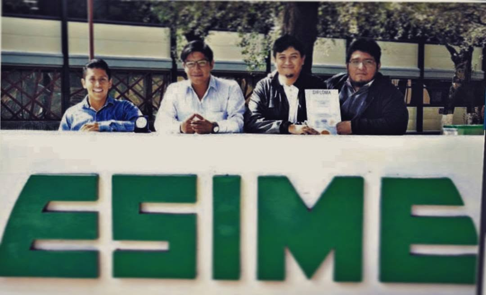
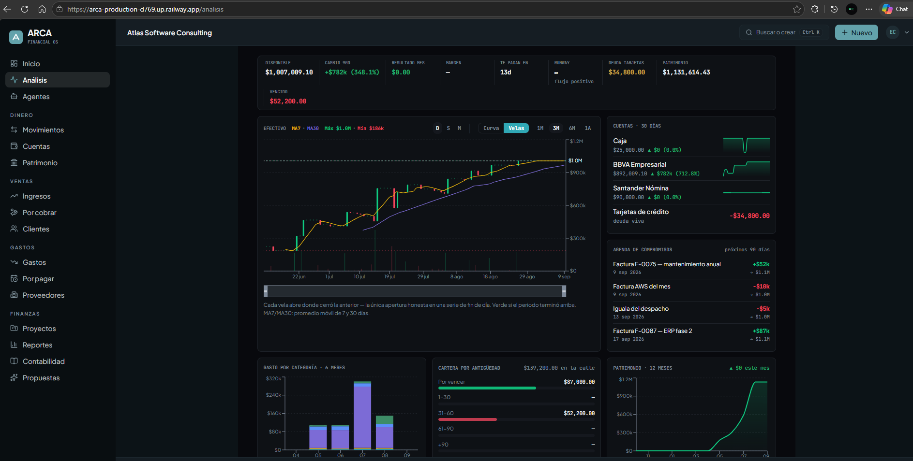

La próxima organización será agéntica.
Construimos la infraestructura para que empresas, industrias y gobiernos entiendan su contexto, ejecuten con criterio y aprendan de cada decisión.
CIUDAD DE MÉXICO · DESDE 2016Los sistemas actuales registran.
No entienden.
Ingeniería tecnológica + venture building.
desde 2016
internacionales
un mismo núcleo
gobierno y empresa

Empezamos como ingenieros.
Seguimos siéndolo.
Un equipo de estudiantes del Politécnico que llevó sus inventos a competir en Europa y Norteamérica. Esa disciplina de construir y demostrar es la base de todo lo que hoy es Atlas.
2016
2026
Diez años del mismo hilo: investigar, construir, demostrar. De competir con inventos a operar sistemas agénticos en instituciones.
Trece
premios.
Cuatro países.


Founder-led.

En qué
trabajamos
hoy.
09 / 18
Tres apuestas. Tres roles.


Panel de misión · 12 proyectos
Un núcleo. Todo lo demás se construye encima.
empresarial
financiera
& deep tech
& territorio
& talento
El sistema operativo del negocio.
Un Business OS componible que digitaliza, integra y automatiza la operación completa. Módulos que se activan por etapas sobre una sola fuente de verdad.
Un solo cliente.
Últimos 90 días.
Panel real de operación. Cada venta, ticket y sucursal pasa por Atlas ONE en producción.

Esto es lo que ya transacciona Atlas ONE:
de enero a la fecha · 2026.
La infraestructura ya aguanta operación real. Lo que sigue es ponerle inteligencia encima: Cortex.
La empresa operada por agentes.
Una flota de agentes ejecutivos que planifica, analiza, proyecta y valida sobre los sistemas reales. Tú apruebas.


Emprender desde la investigación.